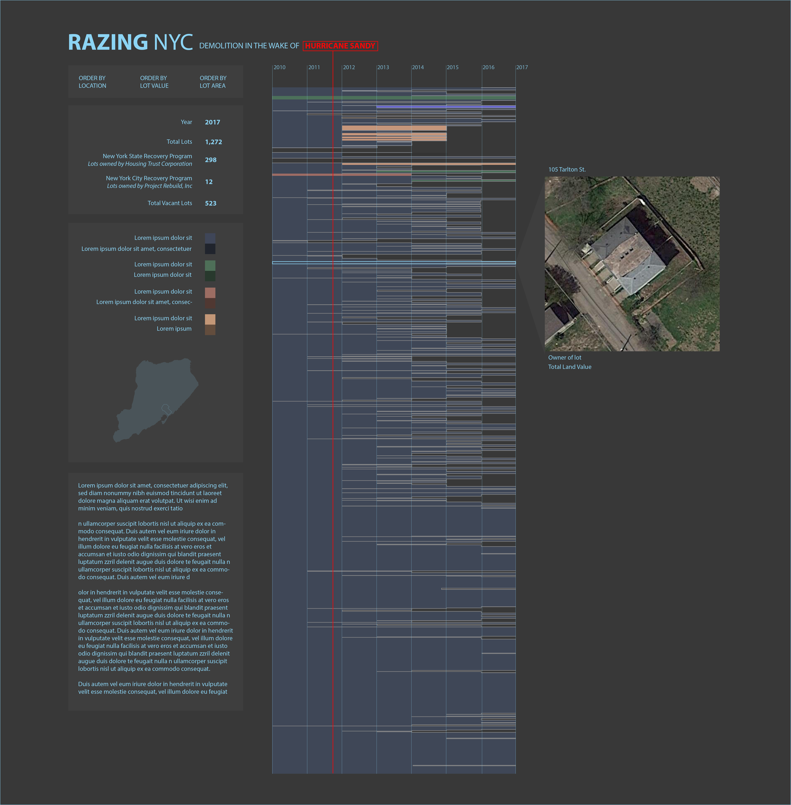
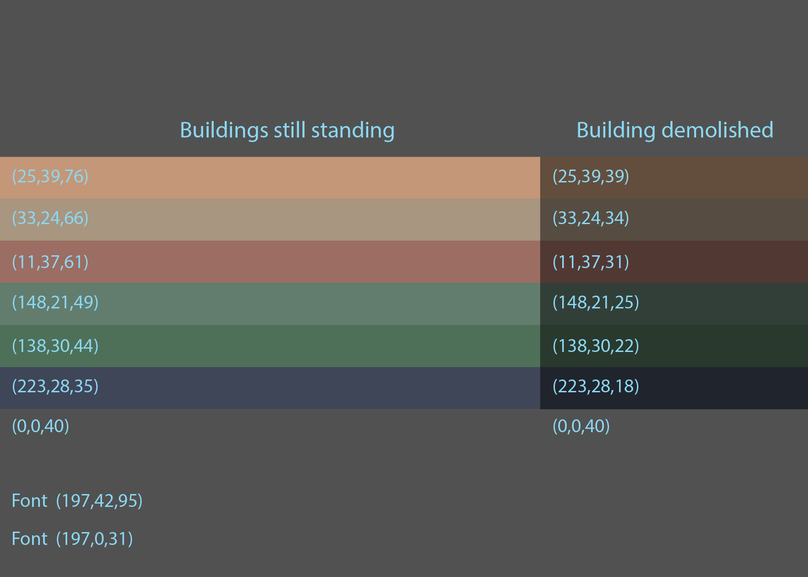
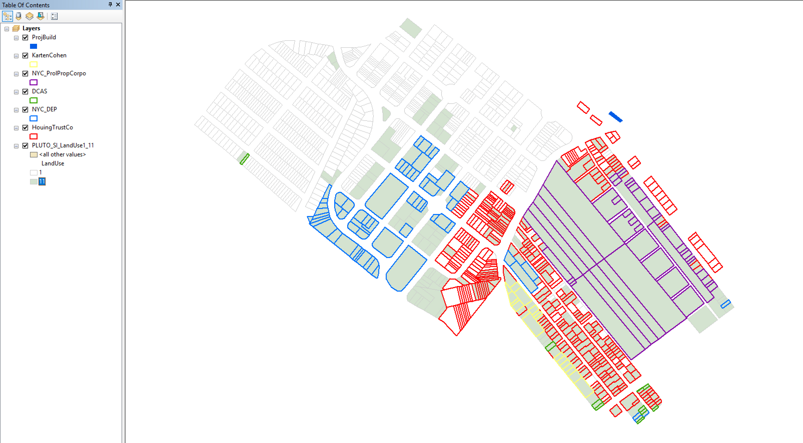
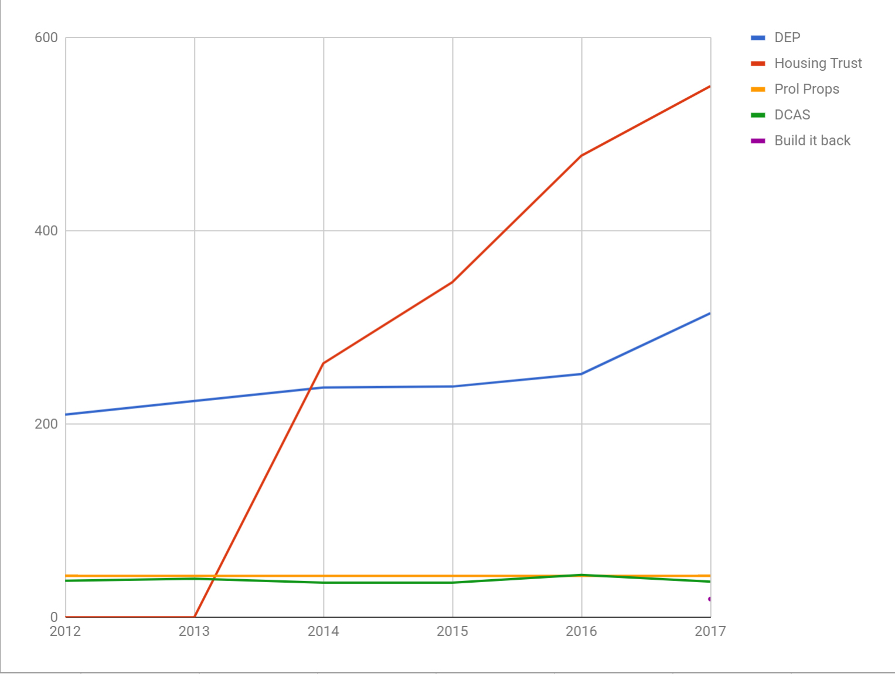

ASSIGNMENT 2 - VIZ SKETCH
A sketch of the visualization.
The colors for the page's pallette were sourced from satellite imagery of the Oakwood Beach neighborhood.
A map of the Oakwood Beach neighborhood in Staten Island, the study area. Green indicate vacant lots. Lot outlined in red are those owned by the state government (Housing Trust, Co.), blue, green, and purple, owned by the city government.
Ownership of lots within the study area by State and city governments. "Housing Trust" is the state buy out program; "Build it Back" NYC's buyout/rehabilitation program (it only started acquiring properties in this area in 2017).
Oakwood Beach is home to large scale buy outs (and subsequent demolition) of single family residential homes. Both state and local governments have implemented buy out programs. These programs require (continue...) by both state and municipal governments.
Here is some background to help inform our framing of the data we discover, as we look to focus in on the experiences of people most affected by Sandy, and what has and should be done. Here is a look at very different NY government programs, from the city and the state, to help those who lost their homes. The philosophies and implementations were very different, with great long-term impact on how these people fared after Sandy.

The Build it Back Program is run by NYC government

The Governor's Buy it Back, Wetlands program was greeted with great enthusiasm by many

Thousands are moving into waterfront areas in NYC, despite the lessons of the past

Some other changes/improvements post-Sandy that may help, but may not be enough